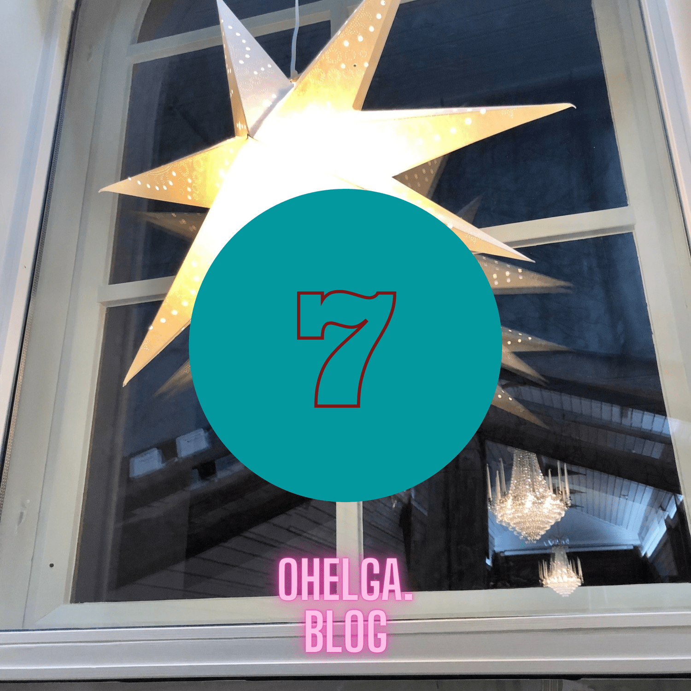

Lucka 7: Denna version kunde vara inledningen till Bondfilmen The man with the golden stämband, tycker Tomi.
Denna version kunde vara inledningen till Bondfilmen The man with the golden stämband, tycker Tomi. Johanna ei ihan tajua koko lajia.
Linkit kappaleeseen:
Apple Music
på Spotify:

Kommentit / Kommentarer (1)
<p>A cappella-grejen är oerhört skicklig, att alla ljud i låten är alstrade med kroppen. Jag skulle knappast orka lyssna någon längre tid på detta, precis som ni var inne på är det möjligtvis musik som gör sig bäst på scenen. Själv såg jag aldrig Fork uppträda live då de var aktiva (de slutade 2019), men deras konserter, eller snarare shower, var populära och omtyckta. De sjunger bra, men inte fantastiskt, som ni också konstaterade. Vet ni förresten att en av medlemmarna är en polis som utreder sexbrott. Han liksom övriga medlemmar tog tjänstledighet när karriären rullade på som bäst. Här kan man lyssna på hans sommarprat: https://svenska.yle.fi/a/7-1471038</p>